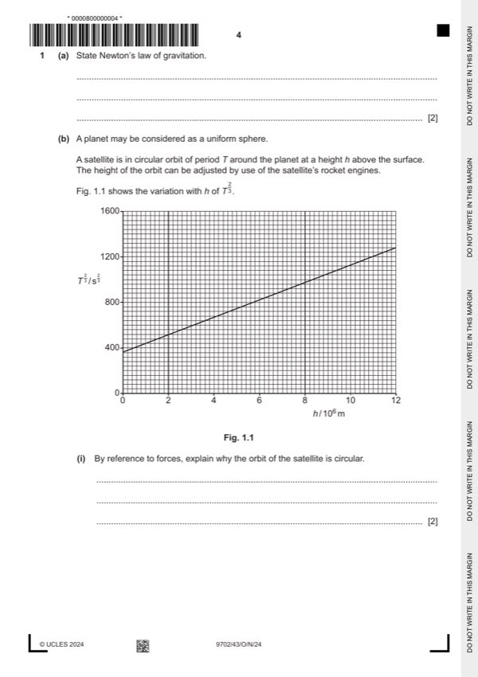

Question 1

Original paper page 4
Part 1(a) — solution
- [B1] Obtain/use: (gravitational) force is (directly) proportional to product of masses
- [B1] Obtain/use: force (between point masses) is inversely proportional to the square of their separation
Mark points
- [B1] Obtain/use: (gravitational) force is (directly) proportional to product of masses
- [B1] Obtain/use: force (between point masses) is inversely proportional to the square of their separation
Part 1(b)(i) — solution
- [B1] Obtain/use: (gravitational) force acts perpendicular to direction of motion
- [B1] Obtain/use: gravitational force provides centripetal acceleration
Mark points
- [B1] Obtain/use: (gravitational) force acts perpendicular to direction of motion
- [B1] Obtain/use: gravitational force provides centripetal acceleration
Part 1(b)(ii) — solution
- [M1] Obtain/use: (F =) GMm / x2 = mx2 and = 2 / T
- [A1] Obtain/use: completion of algebra leading to x3 = GMT2 / 42
- [B1] Obtain/use: clear indication that B = radius of planet and that A = mass (of planet)
Mark points
- [M1] Obtain/use: (F =) GMm / x2 = mx2 and = 2 / T
- [A1] Obtain/use: completion of algebra leading to x3 = GMT2 / 42
- [B1] Obtain/use: clear indication that B = radius of planet and that A = mass (of planet)
Part 1(b)(iii) — solution
- [A1] Obtain/use: A = 1.3 1024 kg
- [A1] Obtain/use: e.g. 360 = ((1280 – 360) B) / (12 106)
Mark points
- [A1] Obtain/use: A = 1.3 1024 kg
- [A1] Obtain/use: e.g. 360 = ((1280 – 360) B) / (12 106)
Part 1 — solution
mark for any two points, 2 marks for all three points
Mark points
- Include the ideas shown in the solution above.